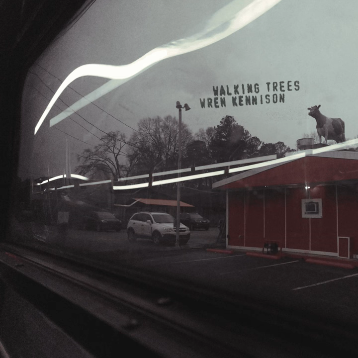

07.22.25

Trees
Churchbells
Mastaba
Winter Sun
All For
Kate
I learned to sing and write lyrics specifically to make this. That should tell you everything you need to know
about these songs.
It might not be the greatest EP of all time, but it was fun to make, and it deserved better than rotting on a hard drive.